Home › Lecture pages
Lecture pages — Cuesta master course
137 selected pages of the lecture “Remote Sensing of the Atmosphere: a focus on air composition” (Juan Cuesta, Université Paris-Est Créteil, Master Space 2026–2027; 233 pages in total). The pages were rendered, read by text layer and OCR, and chosen for exam relevance. Click a page to enlarge. Page numbers match the PDF.
© The lecture belongs to its author; pages are shown here for private study with credit. Only selected pages are shown; the full PDF is not republished.
Atmosphere basics: pressure, layers, composition · Ozone, ozone hole and climate · Tropospheric chemistry, sinks and key pollutants · Principle of remote sensing, platforms and geometries · Radiative transfer and scattering · Line profiles and spectroscopy · Retrieval: DOAS, cost function, averaging kernels · Ozone from space: IR + UV multispectral · Aerosol optical properties and passive visible retrieval · Aerosols in the thermal IR and O₂ A-band · Active remote sensing: lidar ·
Atmosphere basics: pressure, layers, composition (9 pages)
Used in B · Atmosphere & ozone chemistry
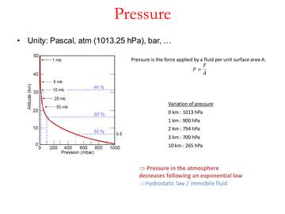
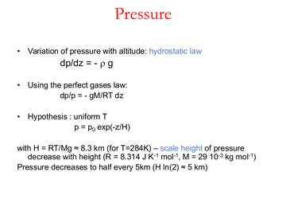


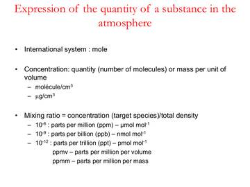

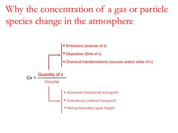
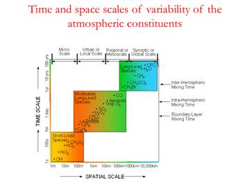
Ozone, ozone hole and climate (5 pages)
Used in B · Atmosphere & ozone chemistry
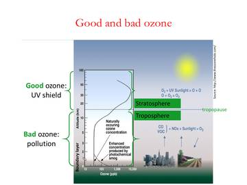

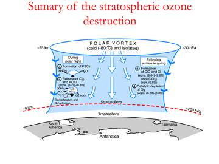

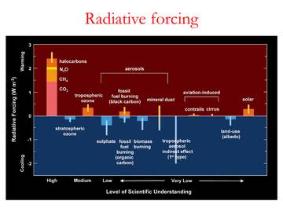
Tropospheric chemistry, sinks and key pollutants (9 pages)
Used in B · Atmosphere & ozone chemistry
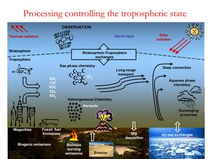


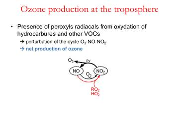


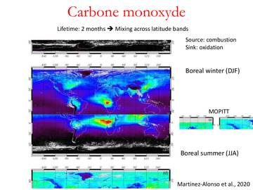

Principle of remote sensing, platforms and geometries (21 pages)
Used in M4 · Pointing geometries

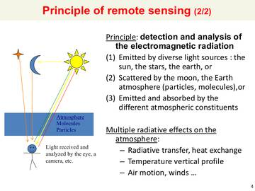
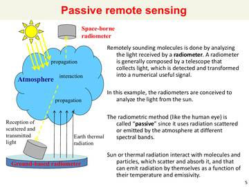
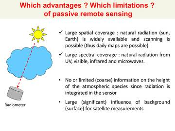


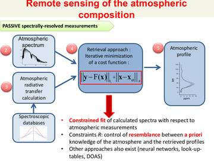
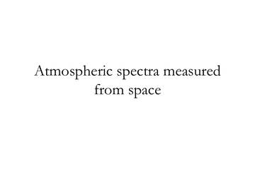
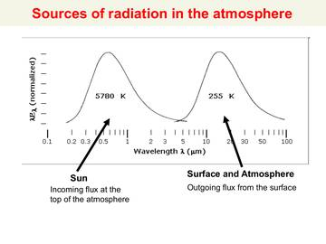
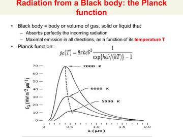
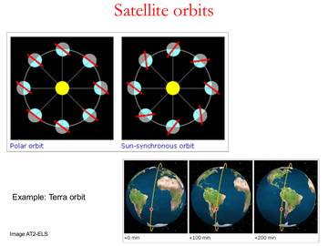
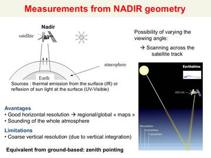
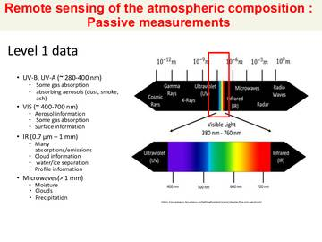
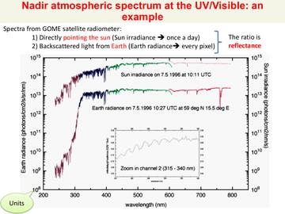
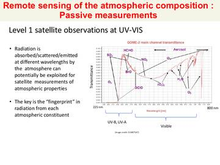
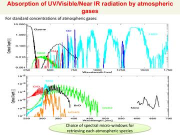
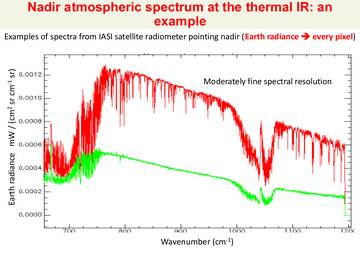
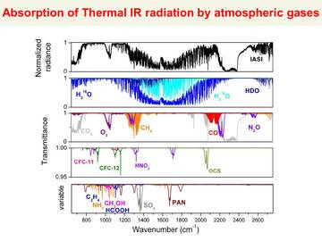
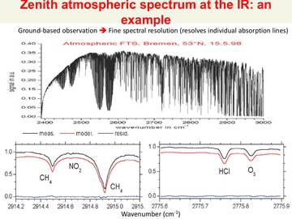
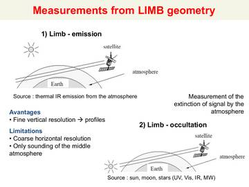
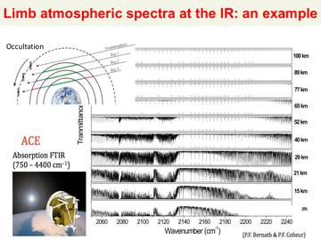
Radiative transfer and scattering (18 pages)
Used in A · Core knowledge toolbox
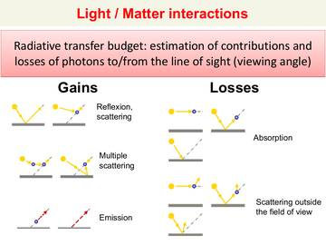
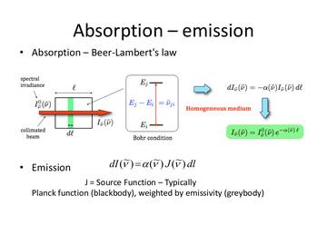
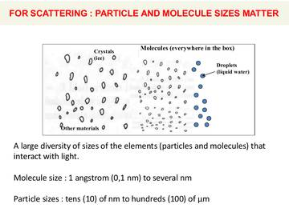
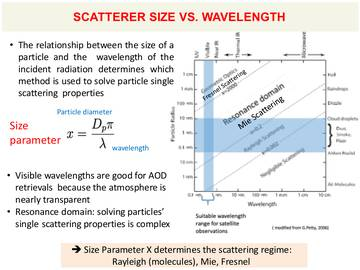
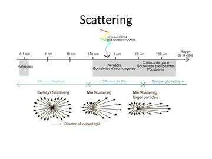
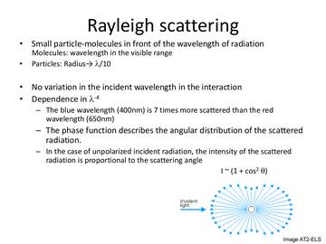
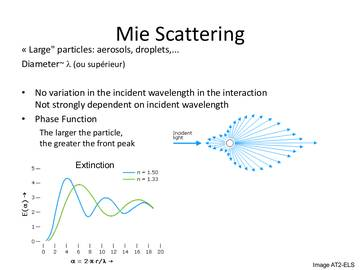
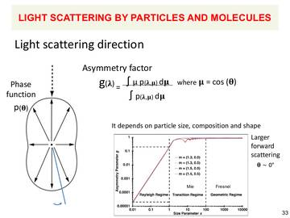
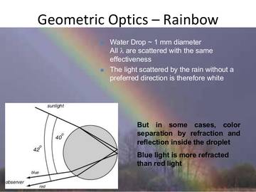
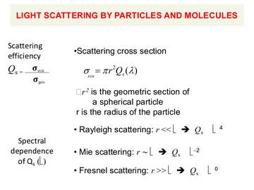
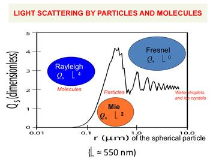
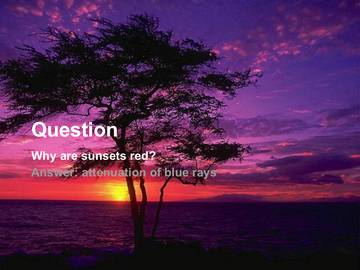
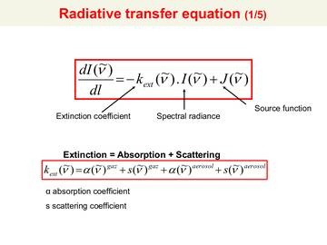
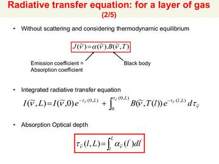
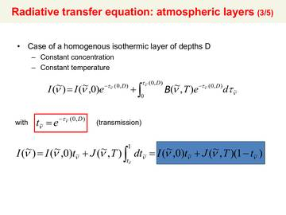
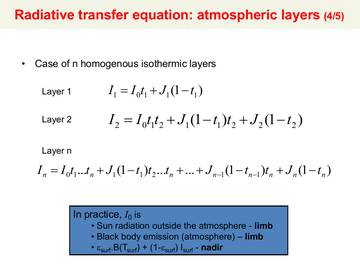
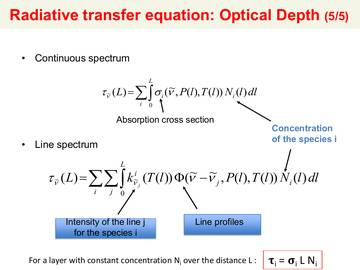
Line profiles and spectroscopy (4 pages)
Used in A · Core knowledge toolbox
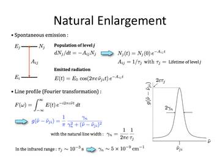
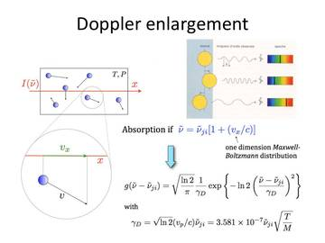
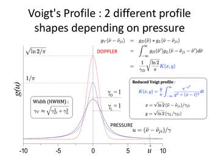
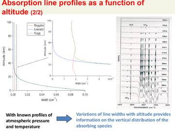
Retrieval: DOAS, cost function, averaging kernels (14 pages)
Used in M5 · Averaging kernels
Ozone from space: IR + UV multispectral (11 pages)
Used in C · Satellite case studies


Aerosol optical properties and passive visible retrieval (13 pages)
Used in M6 · Passive aerosol sensing


Aerosols in the thermal IR and O₂ A-band (14 pages)
Used in C · Satellite case studies


Active remote sensing: lidar (19 pages)
Used in D · Active sensing: lidar